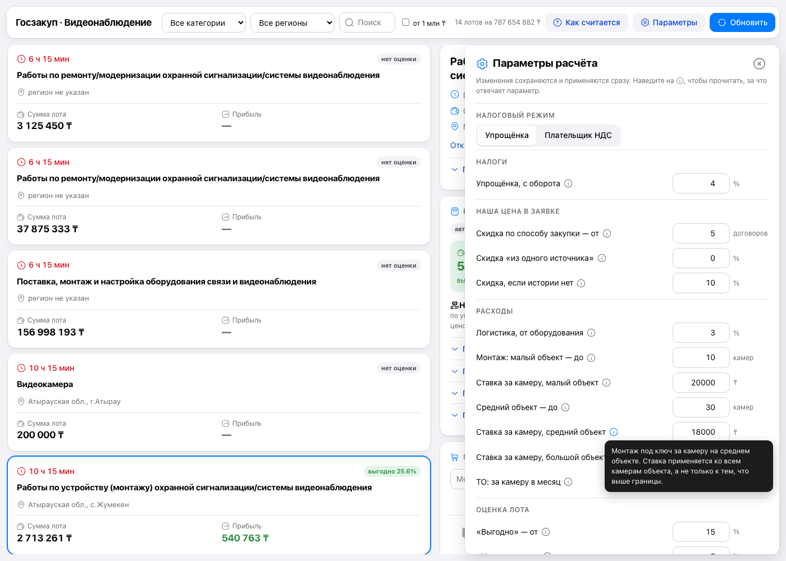
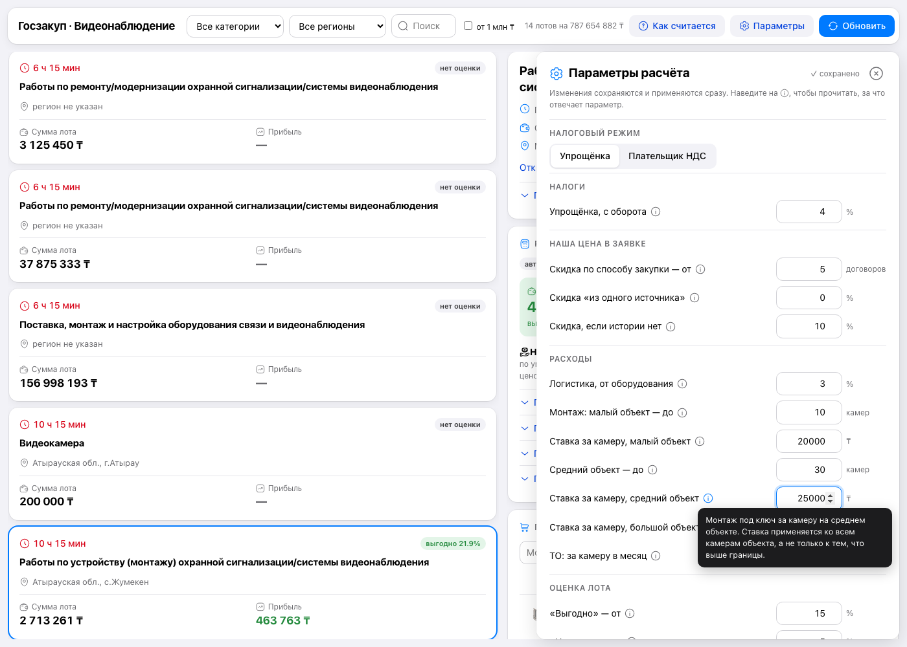

24.11.2026 · помощник по госзакупкам · localhost:8765
| Группа | Параметр | По умолчанию |
|---|---|---|
| Налоговый режим | Упрощёнка / плательщик НДС | упрощёнка |
| Налоги | Упрощёнка с оборота (в режиме НДС — НДС и КПН) | 4% |
| Наша цена в заявке | Скидка по способу закупки — от N договоров | 5 |
| Скидка «из одного источника» | 0% | |
| Скидка, если истории нет | 10% | |
| Расходы | Логистика, от оборудования | 3% |
| Монтаж: границы малого / среднего объекта | 10 / 30 камер | |
| Ставка за камеру: малый / средний / большой | 20 000 / 18 000 / 15 000 ₸ | |
| ТО: за камеру в месяц | не задана | |
| Оценка лота | «Выгодно» от / «на грани» от | 15% / 5% |
| Деньги на старте | Обеспечение заявки / договора | 1% / 3% |
Проценты вводятся как проценты: 4, а не 0.04. Раньше порог «на грани» (5%) и скидка без истории (10%) были зашиты в код, теперь это параметры.

Панель открывается поверх карточки лота, список слева остаётся виден. Наведение на ⓘ у «Ставка за камеру, средний объект» показывает подсказку.

Проверка: ставка за среднее изменена с 18 000 на 25 000 ₸. Прибыль лота в Жумекене (11 камер) в списке сразу упала с 540 763 до 463 763 ₸ (−11 × 7 000), оценка — с 25,6% до 21,9%. Значение сохранилось и пережило перезагрузку страницы. После проверки я вернул 18 000.
Правила расчёта целиком: docs/ECONOMICS.md.